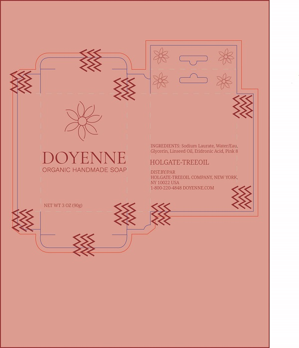

Resume
Graphic Design student at Wake Technical Community College ready to work in the outdoor gear industry
Damian “Bo” Craig is an adventurous 31 year old ready to jump back in to the outdoor gear industry, this time as a graphic designer. Bo spent six months in Australia, first working at a winery, then traveling the Australian Coast Highway from Melbourne to Adelaide. But it was his time spent in Maine, working at LL Bean, that made him want to start his career in graphic design. Bo is observant, intuitive, asks great questions, and has a keen attention to detail.
Featured Projects
View selected projects below.
Soap Brand
Doyenne Soap brand project. Project was for the soap brand, Doyenne. Target market: women ages 30-50, primarily urban, culturally savvy, anti-spa, and unique.
Work Experience
I have worked a number of odd jobs. I am a knower of all, master of none. I plan to change that with my Graphic Design career. I believe the greatest asset to any job is a high appreciation to customer service.
Customer Service Representative
LL Bean
October 2019 - May 2020
LL Bean is a privately owned company that believes a better way of life spent is having more time outside. LL Bean has outdoor leaders who belive better products make better experiences outside in the wilderness. Their goal is to get everyone safely outside to enjoy earth's incredible wilderness.
Duties:
- Exhibited strong detail orientation and attention to vital merchandising standards to create an inspiring shopping experience
- Maintained 12+ calls per hour during peak retail season
- Unflappable when faced with challenging or ambiguous issues
- Effectively maintained store productivity standards by replenishing, receiving, transferring, organizing stock and staying available to assist customers on the sales floor.
Education
Wake Technical Community College
Graphic Design, 2023
Knowledge in Adobe Illustrator
Education
University of North Carolina at Wilmington
Environmental Science, 2014
- Identified jurisdictional wetlands, classification and delineation of wetlands and streams, and determining mitigation requirements to support the environmental permitting of infrastructure projects
- Gained hands-on experience using field techniques assisting with contamination assessment, remediation, compliance, monitoring, and construction projects
- Independently researched, compiled, and analyzed environmental data and correctly applied NEPA regulation policy under Section 404, 10, 401 of the Clean Water Act, Section 10 of the Rivers and Harbors Act and Section 408 from the US Army Corps of Engineers and Coastal Use Permits